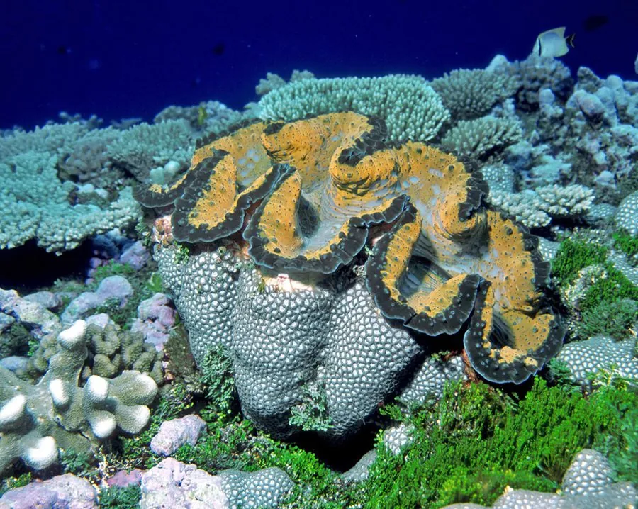

软体动物 · 动物界
大砗磲 Tridacna gigas

现存最大的双壳类，壳长可达 1.2 m、重达 200 kg 以上，外套膜内共生藻类能为它提供营养，是中国国家一级保护动物。
- 分类
- 门软体动物门纲双壳纲目帘蛤目科砗磲科属砗磲属
- 栖息环境
- 热带珊瑚礁的浅水区，幼体附着于礁石，成体终生固定
- 地理分布
- 印度洋至太平洋热带海域，包括菲律宾、印度尼西亚、澳大利亚北部和太平洋岛屿
- 保护级别
- IUCN 易危（VU）；中国国家一级保护动物；列入 CITES 附录Ⅱ
物种志
大砗磲的贝壳巨大而厚重，两壳近等大，壳面有放射状的褶皱，边缘呈波浪形，壳长可达 1.2 m，体重可达 200 kg 以上，是现存最大的双壳类动物。外套膜色彩鲜艳，蓝、绿、褐相间，上面生活着大量虫黄藻。贝壳的珍珠层厚实，呈白色，历史上常被用来雕刻和制作装饰品。
大砗磲分布于印度洋至太平洋的热带珊瑚礁，多见于水深 0–20 m 的浅水区。幼体用足丝附着在礁石上，成体终生固定，一旦定居就不再移动。它与虫黄藻形成共生关系：藻类进行光合作用，为砗磲提供大部分营养，砗磲则提供庇护场所和二氧化碳，同时它也用鳃滤食浮游生物。大砗磲是雄性先熟的雌雄同体动物，繁殖时向海水中释放精子和卵子，幼体浮游数周后寻找合适基底定居。由于肉可食用、贝壳可做工艺品，加上栖息地遭到破坏，野生大砗磲数量明显下降，IUCN 将其评为易危；中国将其列为国家一级保护动物，全部砗磲科物种也被列入 CITES 附录Ⅱ。
形态与习性
- 食性靠虫黄藻光合作用供能，也滤食浮游生物
- 壳长可达 1.2 m
- 体重可达 200 kg 以上
- 寿命可达 100 年
- 繁殖雄性先熟的雌雄同体，释放精卵，幼体浮游后定居
- 共生外套膜内共生虫黄藻，为宿主提供大部分营养
趣味知识
- 大砗磲的外套膜里有虫黄藻，靠光合作用给它提供养分，因此生活在阳光充足的浅水。
- 它的壳可以大到当婴儿澡盆，历史上曾被当作货币和装饰材料。
- 大砗磲一旦用足丝固定在礁石上，几乎终生不再移动。